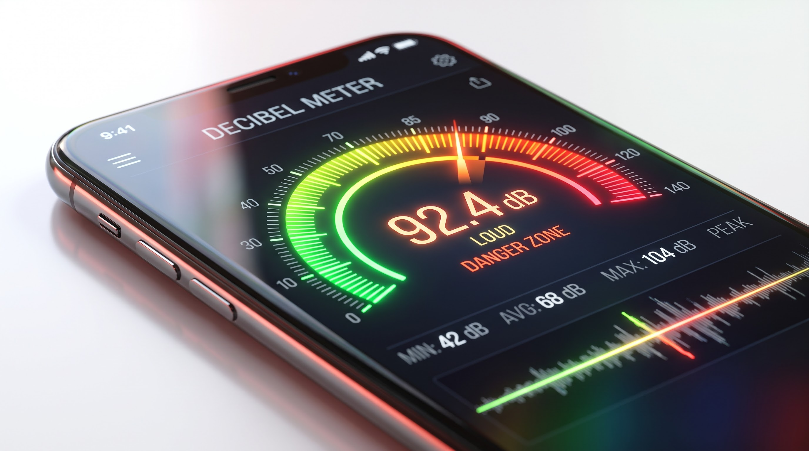
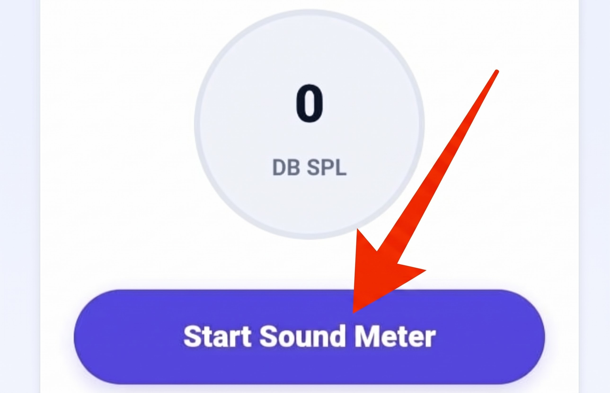

Online Decibel Meter
Measure ambient room acoustics and real-time environmental sound pressure levels directly through your device microphone. 100% private, browser-based DSP analysis.
0
dB SPL
Measure ambient room acoustics and real-time environmental sound pressure levels directly through your device microphone. 100% private, browser-based DSP analysis.
Calculates continuous Fast Fourier Transform frequency averages via Web Audio nodes.
No audio clips or voice snippets are ever recorded, saved, or uploaded to servers.
Immediately kills microphone tracks and frees sensor hardware the instant you click stop.
Works smoothly across Android Chrome, iOS Safari, and desktop laptop microphones.

Acoustic energy is fundamentally physical mechanical vibration traveling through air as alternating waves of atmospheric compression and rarefaction. When discussing loudness, the human auditory system does not interpret changes in sound pressure linearly. If a sound wave doubles in physical atmospheric pressure, your brain does not register it as twice as loud; rather, human perception follows a logarithmic progression. To quantify sound in a manner that mirrors biological human hearing, acoustic scientists utilize the decibel (dB) scale.
The standard reference for airborne acoustics is Sound Pressure Level (SPL), expressed mathematically against the quietest sound a healthy human ear can perceive—the threshold of hearing ($20 \text{ micropascals}$ of pressure, defined as $0\text{ dB SPL}$). Because the scale is logarithmic, an increase of $10\text{ dB}$ represents a tenfold increase in physical acoustic intensity and sounds approximately twice as loud to the human brain. The MiMusic Online Decibel Meter taps into your device's microphone via the native Web Audio API, calculating continuous frequency amplitude averages to provide an immediate numerical readout of ambient noise.
Follow these straightforward steps to monitor sound pressure levels in seconds:

Click Start Sound Meter, grant microphone permission, and view live ambient noise readings.
Tap the "Start Sound Meter" button to initialize the browser's audio input pipeline.
When prompted by your browser (Chrome, Safari, Firefox), tap "Allow" to grant temporary microphone access.
Observe the digital meter update in real time as environmental noise enters your device microphone capsule.
To contextualize your measurements: gentle breathing registers around 10 dB, a tranquil bedroom sits around 30 dB, and normal conversation averages 60 dB. In contrast, heavy city traffic produces 75–85 dB, while sirens and live rock concerts easily exceed 110–120 dB SPL.
Health organizations (WHO and NIOSH) caution that sustained exposure to sound pressure levels exceeding 85 dBA causes gradual, permanent stereocilia damage. Because sound energy is logarithmic, every 3 dB increase halves the safe unprotected exposure duration.
Many downloadable app store meters request full phone storage access, run background processes, and upload audio files to external cloud tracking networks. MiMusic.net adheres to strict client-side sandboxing:
AnalyserNode for instantaneous mathematical level calculations.Our tool provides an excellent relative estimate of environmental noise levels. However, dedicated Type 1 and Type 2 sound level meters feature factory-calibrated pre-polarized capsules. Consumer smartphones incorporate automatic gain control (AGC) and noise-suppression chips that can compress extreme peaks above 95 dB.
Never. The microphone stream is processed strictly in temporary device RAM to calculate real-time frequency amplitudes. No recordings are saved, cached, or transmitted to any remote servers.
Audiologists recommend wearing hearing protection (such as high-fidelity earplugs or industrial earmuffs) in any environment that consistently registers at or above 85 dB SPL, especially during concerts, motorsport events, or when operating power tools.
Every device utilizes different microphone capsule hardware, analog-to-digital converters (ADCs), and internal preamplifiers. Microphones calibrated for voice calls naturally filter sub-bass rumbles differently than laptop array microphones.